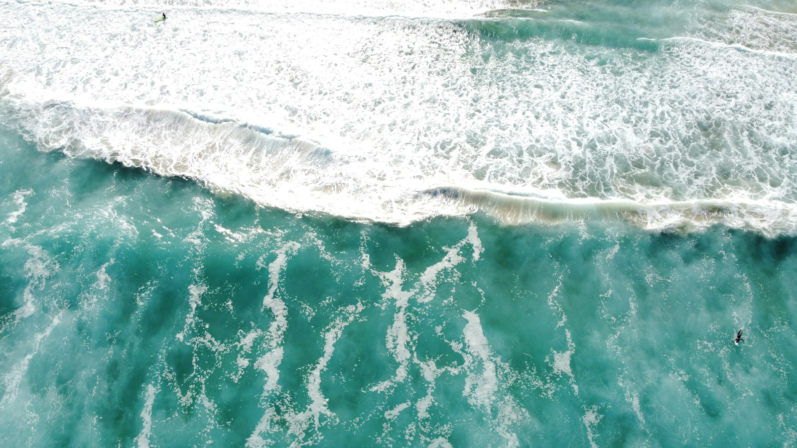

Tempo de estar aqui.
A paisagem abre espaço para uma leitura mais tranquila, sem pressa nem excesso.
Conhecer o percurso
O percurso também acolhe.
Estudo fictício de hospitalidade. A foto é de banco, sem vínculo com uma hospedagem existente.
O traço acompanha a rolagem.
Uma estadia imaginada.
- Chegar e conhecer
- Escolher o próprio ritmo
- Ficar perto da paisagem
Conteúdo demonstrativo. Não é uma empresa em operação, nem uma oferta comercial.